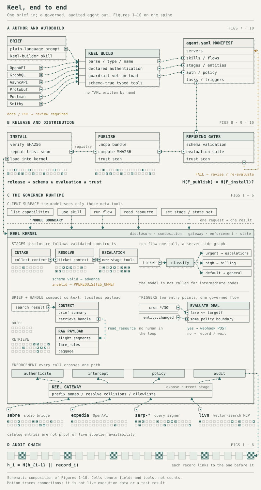

Keel, end to end
← Keel paper
Pause motion
Download PNG

Keel end to end: Figures 1–10 of the paper redrawn on one spine. Author and autobuild, release gates and distribution, the governed runtime, and the audit chain. Schematic; motion traces connections, not live execution.